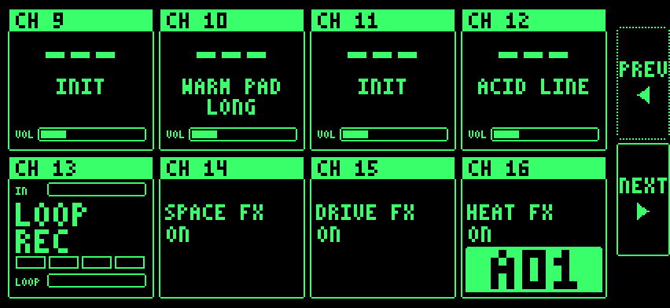
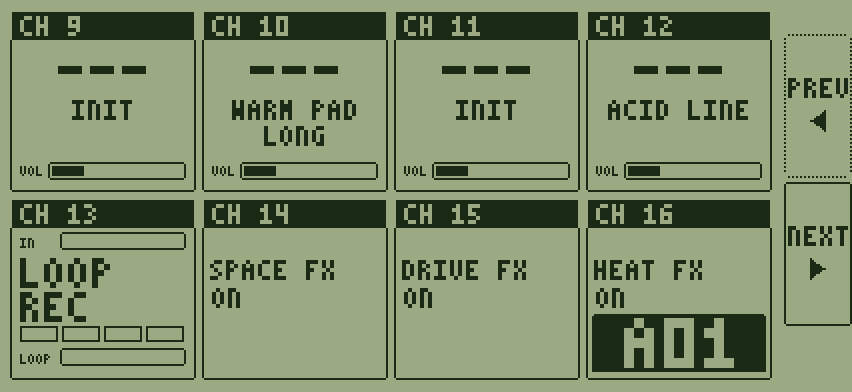
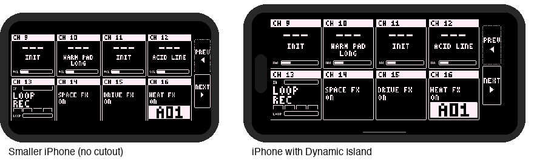

Changes
Build 2
Note: this build is a fresh start. Projects, sounds and settings from the first beta do not carry over.
New
- SAMPLER engine with four machines: KIT (16 pads), GRAIN, STRETCH and SLICE.
- Lo-fi models for the sampler: SP, S950 and CRUSH.
- The sample browser loads samples from your phone, your recordings, or straight from the Digitakt.
- Skins: seven colourways in the settings.
- A welcome message on first launch.

Two of the seven skins, PHOSPHOR and LCD:


You told us, we did it
- "Letters are cut off", "the Dynamic Island blocks stuff". The app now scales to fit every iPhone, clear of the rounded corners and the notch.
- "The interface needs common ways to navigate", "how do I get back from browse?" BACK is top left on every screen. PREV and NEXT turn every page. No more swiping.
- "CC mapping is lost when loading presets." Your CCs now belong to the project. Loading a sound never changes them.
- "It keeps listening to the microphone." It doesn't. The iPhone treats the Digitakt's USB audio as a microphone, so the app asks for microphone access the first time you connect it. The phone's own microphone is never used, unless you disconnect the USB and turn MIC on in the app.
- "Synth One's OSC selectors miss my taps." Fixed.
- "The knob needle turns the wrong way past halfway." Fixed.
- "Can the knobs show their values?" Yes. Turn on knob values in the settings.
- "The looped Digitakt audio is really quiet." The input and looper levels are reworked. The Digitakt now loops at the level it plays.
- "Is there a manual?" You're reading it. The Digitakt II is confirmed working.
One layout on every screen, scaled as large as it fits and kept clear of the notch and the Dynamic Island. Illustration:

Other changes and fixes
- Volume and gain staging improvements.
- Changing a part's engine resets its CCs to that engine's defaults. Presets no longer store CCs.
- Resetting the looper with a C note no longer changes the divider.
- Redesigned screens: one header size, new SOUNDS and BROWSE, a CC number picker, editable part channels.
- The master volume now starts at the right level.
Coming next
Plans, not promises:
- A master compressor.
- A limiter on each channel.
- Granular effects.
- We are considering a separate design for the iPad.